CARS FOR SALE
You can check out our wide range of cars we offer for sale below.
Mercedes GLE
The Mercedes-Benz GLE-Class, formerly Mercedes-Benz M-Class, is a mid-size luxury SUV produced by the German automaker Mercedes-Benz since 1997. In terms of size, it is slotted in between the smaller GLC-Class (based on the C-Class) and the larger GLS-Class, the latter with which it shares platforms.
For a short time, between 1999 and 2002, the M-Class was also built by Magna Steyr in Graz, Austria, for the European market, before all production moved to the U.S. plant near Vance, Alabama. From late 2012, the M-Class was also assembled at new plants in India, Indonesia and Thailand.
Since April 2015, the M-Class has been renamed to the Mercedes-Benz GLE-Class in an effort to harmonize the various nameplates, aligning it with the E-Class.
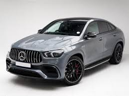 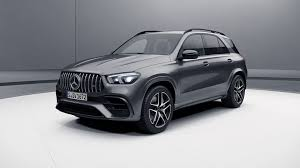 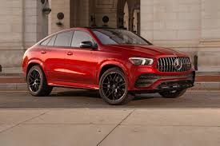
Mercedes CLA 200
The second generation CLA-Class was unveiled at the 2019 Consumer Electronics Show in January 2019. Based on the same Modular Front Architecture (MFA2) platform as the W177 A-Class, W247 B-Class, X247 GLB and H247 GLA the C118 CLA-Class retains the fastback styling to set it apart from the V177 A-Class Sedan and shares its powertrains with the A-Class. Stylistically, the design is inspired by the new design language Mercedes-Benz adopted for the C257 CLS-Class.
The C118 has an almost completely flat underbody, resulting in a drag coefficient as low as 0.23. It uses front MacPherson struts in combination with either a twist beam or multi-link at the rear, and the option of adaptive dampers. Compared to its predecessor, the C118 is 48 mm (1.9 in) longer, 53 mm (2.1 in) wider and loses 2 mm (0.079 in) in height, while its wheelbase has been extended by 30 mm (1.2 in).
All models feature the Mercedes-Benz User Experience (MBUX) infotainment system, including the "Hey Mercedes" voice-controlled assistant and a new Interior Assist gesture control system. Standard models feature two 7-inch displays for the instrument cluster and MBUX screen, and can be upgraded to 10.25-inch screens, a full-color head-up display, adaptive cruise control, active steering assist, and active brake assist.
 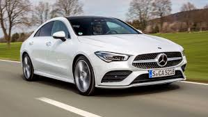
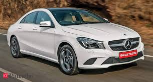
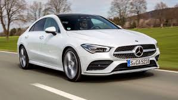
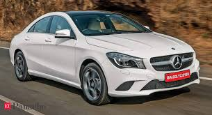
Mustang GT
The 10-speed SelectShift® automatic transmission has a wide-ratio span and optimized gear spacing. This gearbox helps improve responsiveness and performance during acceleration.
This engine comes with a boost of adrenaline. The twin independent variable cam timing (Ti-VCT) technology improves fuel economy while boosting power, all while reducing emissions. The exhilaration is instantaneous when its 450 horsepower and 410 lb.-ft. of torque* springs to life.
19" x 9" (F) 19" x 9.5" (R) Ebony Black-painted aluminum wheels
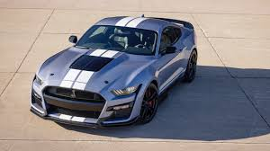 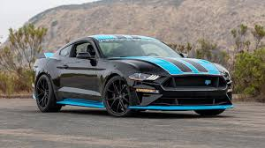
Cardilac XT5
The Cadillac XT5 (short for Crossover Touring 5) is a compact luxury / D-segment crossover SUV manufactured by General Motors. It was introduced at both the Dubai Motor Show and LA Auto Show in November 2015. The XT5 replaced the Cadillac SRX crossover when it was launched in spring 2016. It is the second model to use Cadillac's new alphanumeric naming scheme (after the CT6) and the first in the Crossover Touring (XT) series. The XT5 is manufactured at GM's Spring Hill Manufacturing plant. The Chinese-market XT5 is manufactured in Shanghai by SAIC-GM.
The XT5 features technology such as a streaming video rear-view mirror, 360° view backup camera, and the first application in a Cadillac of GM’s Electronic Precision Shift, which replaces the standard hydraulic shifter with an electronic controller. This, together with a new lightweight chassis, results in a weight savings of 278 lb (126 kg) versus the outgoing SRX.
The XT5 was initially available with only one engine, depending on the market. In the United States, it was a 3.6-liter V6 used in other recent Cadillac models, producing 310 hp (231 kW) and 271 lb⋅ft (367 N⋅m) torque.[5] The V6 includes automatic stop-start and cylinder deactivation to improve fuel economy. In China, the XT5 is powered by a turbocharged 2.0-liter 4-cylinder engine producing an estimated 258 hp (192 kW) and 295 lb⋅ft (400 N⋅m) torque.
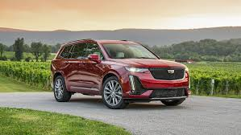 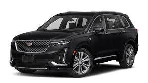 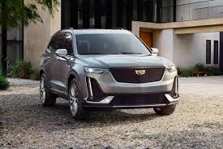
Follow us